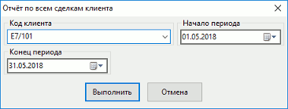

Отчеты - это представление итогов операций
клиента за определенный период в форме, предусмотренной брокером.
Данный раздел описывает стандартные формы отчетов,
поставляемый разработчиком системы QUIK. Вид и содержание отчетов у конкретного
брокера могут отличаться от приведенных примеров.
Сервис запроса отчетов брокера с Рабочего места QUIK
является дополнительной возможностью системы QUIK. Данная возможность появляется
на сервере после установки Модуля формирования отчетов.
Для использования отчетов на Рабочем месте клиента,
необходимо, чтобы:
- данному пользователю был открыт доступ к отчетам на
сервере QUIK;
- в папке с программами QUIK находился файл
REPORTS.DLL;
- в списке принимаемых классов должен быть включен
класс Отчеты.
При соблюдении перечисленных условий в меню программы
появится пункт «Отчеты».
Принцип работы
- Для получения отчета выберите в меню программы пункт «Расширения /
Отчеты» и в нем выберите требуемый тип отчета.
- В открывшемся окне выберите код клиента, дату начала и
конца периода формирования отчета. Для отчета по портфелю клиента указывается
одна дата. Затем нажмите кнопку «Выполнить». Запрос будет передан на сервер.

- При получении отчета на экране откроется окно для его
просмотра. В Окне сообщений так же появится уведомление о времени получения
отчета. Каждый полученный отчет открывается в новом окне.
- Полученный отчет можно скопировать в буфер обмена,
отправить на печать, сохранить в виде файла формата HTML, а так же сохранить в
виде HTML-файла с расширением .xls. Эти действия выполняются из контекстного меню
окна просмотра отчета.
- Если в полученном отчете показаны пустые таблицы, это
означает, что за указанный период операций произведено не было.
См. также: